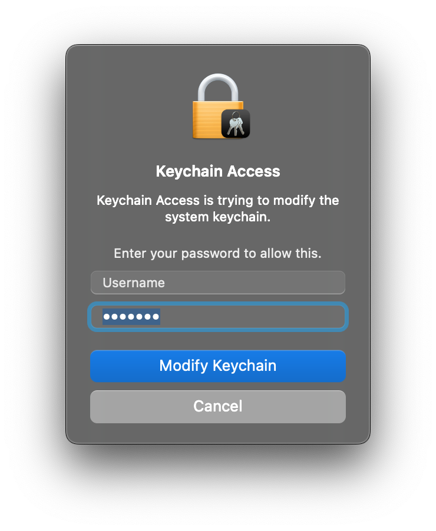

Welcome to OpenCola!
In order to access OpenCola over a secure connection, you need to install an SSL certificate. This keeps your password and data private.
1. Click Install Certificate (but read step 2 first, so you know what to expect):
2. Enter your password in the dialog that looks like:
